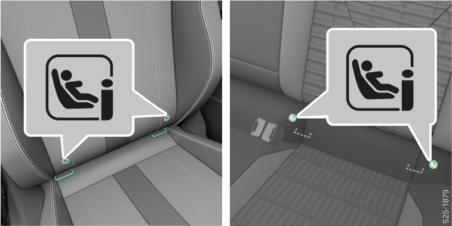
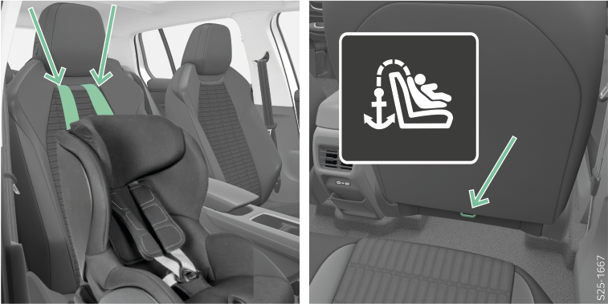
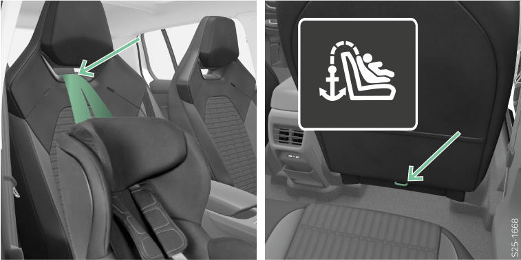

Tenir compte des instructions et consignes mentionnées au début de ce chapitre Siège pour enfants.
ISOFIX/i-Size
Le système ISOFIX/i-Size permet une fixation rapide et fiable du siège pour enfants. Les œillets de retenue pour l’installation du siège pour enfants équipé du système ISOFIX/i-Size sont situés sur les sièges arrière latéraux, et éventuellement sur le siège passager avant.

MISE EN GARDE
Ne pas fixer d’autres sièges pour enfants, ceintures ou objets aux œillets de fixation utilisés pour installer le siège enfant avec le système ISOFIX/i-Size.

Le siège pour enfants i-Size peut être utilisé sur les sièges du véhicule adaptés aux sièges pour enfants équipés du système ISOFIX/i-Size. Dans de rares cas, l’utilisation de sièges pour enfants de type i-Size peut être limitée, par exemple en raison de la taille excessive du siège pour enfants par rapport à la taille de l’habitacle.
Le siège pour enfants équipé du système ISOFIX ne peut être utilisé que si le véhicule figure sur la liste jointe au siège pour enfants.
Vous trouverez de plus amples informations sur le site Internet du fabricant du siège pour enfants ou auprès d’un partenaire Škoda.

TOP TETHER
MISE EN GARDE
Utiliser uniquement des sièges enfant avec le système TOP TETHER sur des sièges équipés d’œillets marqués avec le symbole TOP TETHER.
Pour attacher le système TOP TETHER, utiliser exclusivement des oeillets avec le pictogramme TOP TETHER.
Sur un œillet de retenue du système TOP TETHER, ne fixer qu'une seule ceinture de fixation du siège enfant.
Lors de la fixation du siège enfant avec le système TOP TETHER, aucun autre objet ne doit être attaché à l’œillet du système TOP TETHER.
La ceinture de sécurité attachée du système TOP TETHER limite les mouvements de la partie supérieure du siège enfant.
Fixation du système TOP TETHER sur les sièges arrière
La ceinture de sécurité TOP TETHER peut être passée entre les piges de centrage ou autour des piges de centrage de l’appuie-tête et fixée aux œillets de retenue TOP TETHER situés au dos du siège.
Les œillets de retenue TOP TETHER de la ceinture sont situés sur les sièges arrières latéraux A, éventuellement sur le siège arrière central B.
Fixer le système TOP TETHER sur le siège du passager avant
La ceinture de sécurité TOP TETHER peut être passée entre les piges de centrage de l’appuie-tête ou à travers une ouverture dans le siège et fixée à l’œillet de retenue TOP TETHER.

